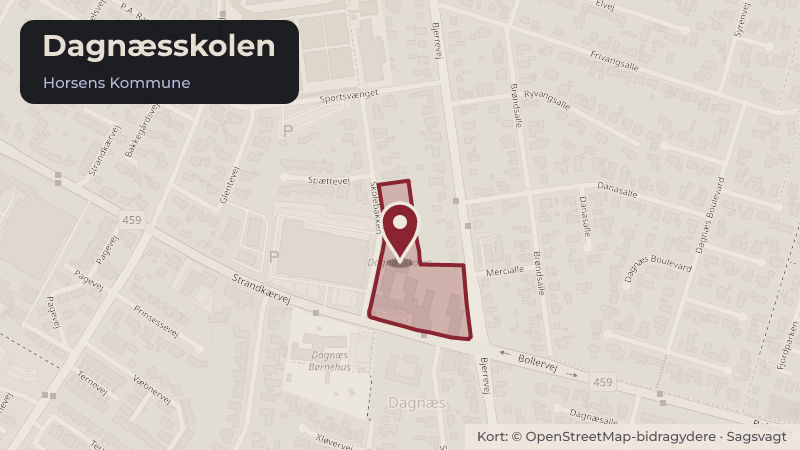

Besluttet 7. oktober, Skole-, Unge- og Uddannelsesudvalget, Horsens
SUU Anlægsbevilling til nye musik- og bevægelseslokaler på Dagnæsskolen
I 2022 blev der udarbejdet en helhedsplan for udbygning af Dagnæsskolen til tre spor. Helhedsplanen består af en kombination af ombygning, nybyggeri og udbygning af skolens faglokalekapacitet. Første fase blev gennemført i 2023 og gav skolen to nye undervisningslokaler.
Byggeri og lokalplanerSkoler og børnBudget og økonomi
Steder i sagen: Dagnæsskolen

Kort fortalt
- Hvem
- Skole-, Unge- og Uddannelsesudvalget, Horsens Kommune
- Hvornår
- Onsdag 7. oktober 2026
- Status
- Besluttet. Skole-, Unge- og Uddannelsesudvalget tiltrådte indstillingen.
Læs hele sagen Kommunens egen tekst
Indstilling
Direktionen indstiller, at
1. Byrådet giver anlægsbevilling og rådighedsbeløb på 12,1 mio. kr. til etablering af nye
musik- og bevægelseslokaler på Dagnæsskolen.
2. Byrådet godkender, at rådighedsbeløbet finansieres af Skole-, Unge- og
Uddannelsesudvalgets anlægspulje fordelt med 2,0 mio. kr. i 2026 og 10,1 mio. kr. i
Sagsfremstilling
I 2022 blev der udarbejdet en helhedsplan for udbygning af Dagnæsskolen til tre spor.
Helhedsplanen består af en kombination af ombygning, nybyggeri og udbygning af skolens
faglokalekapacitet.
Første fase af helhedsplanen blev gennemført i 2023 og gav skolen to nye
undervisningslokaler. Derudover er modernisering af madkundskabslokalerne på
Dagnæsskolen prioriteret i faglokalepuljen i 2026 og er under gennemførelse.
I budgetaftalen for 2026 er der ekstraordinært afsat 7 mio. kr. til næste fase af helhedsplanen,
hvilket har gjort det muligt at fremrykke projektets gennemførsel. Fasen omfatter ombygning af
den eksisterende gymnastiksal med tilhørende omklædningsfaciliteter til nye musik- og
bevægelseslokaler. Projektet er estimeret til 13,3 mio. kr. Ombygningen understøtter skolens
udvikling mod flere årgange med tre spor og bidrager til at sikre tidssvarende faglokaler til
musikundervisningen.
De nye musiklokaler indrettes fleksibelt, så de både understøtter undervisning og kan
anvendes til fælles aktiviteter og fritidsaktiviteter på skolen.
Der er i 2026 afsat 1,2 mio. kr. til detailprojektering af projektet. På baggrund af det
gennemførte udbud og licitationsresultatet søges der om anlægsbevilling og rådighedsbeløb
på 12,1 mio. kr. til etableringen. Med detailprojekteringen og den ansøgte anlægsbevilling
udgør det samlede projektbudget 13,3 mio. kr.
Ombygningen forventes påbegyndt primo november 2026 og færdiggjort til ibrugtagning i
skoleåret 2027/2028.
/SSN
Beslutning
Skole-, Unge- og Uddannelsesudvalget tiltrådte indstillingen.
Kilde: Horsens Kommune, Skole-, Unge- og Uddannelsesudvalget, referat fra mødet onsdag 7. oktober 2026, punkt 4. Læs den originale sag hos kommunen.